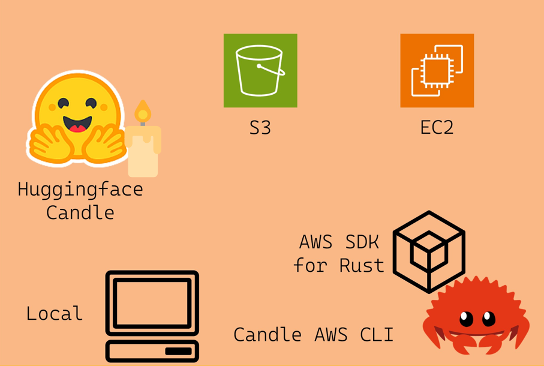

Project Repo: https://github.com/athletedecoded/aws-candle


AWS Candle CLI Tool
A Rust CLI tool to support Candle Cookbook on AWS built using the AWS SDK for Rust

Jump to:
Setup
-
Configure an EC2 instance depending on your model target and memory requirements. For a GPU Deep Learning enabled instance follow the Hello, Candle on AWS! tutorial
-
Create an AWS IAM User Policy "Candle-Cli" with
AmazonS3FullAccessandAmazonEC2FullAccesspermissions -
Create an access key for your "Candle-Cli" user
-
Create
.envfile and configure with AWS credentials and EC2 Key Pair
# $touch .env
AWS_ACCESS_KEY_ID=<YOUR_ACCESS_KEY>
AWS_SECRET_ACCESS_KEY=<YOUR_ACCESS_SECRET>
AWS_DEFAULT_REGION=<YOUR_AWS_REGION>
EC2_KEY=PATH/TO/EC2_KEY_PAIR.pem
CLI Commands
List Resources
Args:
- --s3 ~ flag to list s3 resources
- --ec2 ~ flag to list ec2 resources and status
# To list simultaneously
$ cargo run list --s3 --ec2
EC2 Instance Actions
Args:
- --id ~ instance id
- --action:
- start: start instance
- stop: stop instance
- endpoint: get public endpoint
$ cargo run instance --id <INSTANCE_ID> --action <start|stop|endpoint>
SSH Connect to EC2 Instance
Quick Tip: first run cargo run list --ec2 to confirm instance is running!
Args:
- --id ~ instance id
- --mnt ~ mount local model directory to EC2 on launch
$ cargo run connect --id <INSTANCE_ID>
# To remove mount dir to free up memory
ubuntu@ip$ rm -r <MNT_DIR>
# To close SSH tunnel
ubuntu@ip$ exit
# Make sure to stop your EC2 instance to avoid charges
$ cargo run instance --id <INSTANCE_ID> --action stop
S3 Bucket Actions
Args:
- --name ~ bucket name
- --action:
- list: list objects in the bucket
- create: create new bucket with name --name
- delete: delete bucket with name --name
$ cargo run bucket --name <BUCKET_NAME> --action <list|create|delete>
S3 Object Actions
Args
- --bucket ~ bucket name -- NB: Will create bucket if DNE
- --key ~ object key or path/to/file for --action upload
- --action:
- upload: upload local file as bucket object
- delete: delete object with key --key
- get: download object with key --key to ./root
$ cargo run object --bucket <bucket_name> --key <object_key> --action <upload|delete|get>"
# ex: cargo run object --bucket my-bucket --key ./test/test.png --action upload
# ex: cargo run object --bucket my-bucket --key test.png --action get
Model Sources
The AWS Candle CLI is intended to support multiple workflows for building and executing Candle binaries.
Note: The first execution of a binary may take a while to run as the files have to be collected. Subsequent runs should execute much faster.
- Build and run binaries on EC2
- Mount local binary directory to EC2
- Copy your S3 model objects to EC2
- Download prebuilt model binaries
Build and run binaries on EC2
- Complete the Hello, Candle on AWS or CodePipeline + Jenkins tutorials to build binaries on your EC2 instance.
Note: You can replace skip the "Connect to EC2 via SSH" step and connect through the CLI tool instead!
# List your EC2 instances
$ cargo run list --ec2
# Connect to EC2
$ cargo run instance --id <INSTANCE_ID> --action start
$ cargo run connect --id <INSTANCE_ID>
# Complete https://nogibjj.github.io/candle-cookbook/aws/hello-aws.html tutorial
# Remember to skip the "Connect to EC2 via SSH" step
# Instantly run models from the remote EC2 terminal
ubuntu@ip$ ./quantized --prompt "who invented the lightbulb"
# Exit the SSH
ubuntu@ip$ exit
# Stop your instance
cargo run instance --id <INSTANCE_ID> --action stop
Mount local binary directory to EC2
You can mount a local directory of model binaries when you connect to your EC2 instance with the --mnt flag
# List your EC2 instances
$ cargo run list --ec2
# Connect to your EC2 instance + mount local model directory
$ cargo run connect --id <INSTANCE_ID> --mnt <PATH/TO/MNT_DIR>
# To remove mount dir to free up memory
ubuntu@ip$ rm -r <MNT_DIR>
# Exit SSH
ubuntu@ip$ exit
# Stop your instance
cargo run instance --id <INSTANCE_ID> --action stop
Note: You can build Candle binaries locally by following the Hello, Candle! tutorial.
Copy your S3 models to EC2
If you have Candle binaries stored as S3 objects or artifacts -- like if you completed the Hello, Candle on AWS! -- then you can copy them across to your EC2 instance.
Note: Ensure your EC2 is configured with IAM User Role with AmazonFullS3Access like in Hello, Candle on AWS!
# List your S3 buckets and EC2 instances
$ cargo run list --s3 --ec2
# List your S3 objects
$ cargo run bucket --name <BUCKET_NAME> --action list
# Connect to EC2
$ cargo run instance --id <INSTANCE_ID> --action start
$ cargo run connect --id <INSTANCE_ID>
# Check AWS CLI is installed
ubuntu@ip$ aws --version
# If not install AWS CLI
ubuntu@ip$ curl "https://awscli.amazonaws.com/awscli-exe-linux-x86_64.zip" -o "awscliv2.zip"
ubuntu@ip$ unzip awscliv2.zip
ubuntu@ip$ sudo ./aws/install
ubuntu@ip$ rm -r awscliv2.zip
# Check install
ubuntu@ip$ aws --version
# Copy individual models from S3 to EC2
ubuntu@ip$ aws s3 cp s3://MY_BUCKET/model .
# Copy the entire bucket of model objects/artifacts from S3 to EC2
ubuntu@ip$ aws s3 sync s3://MY_BUCKET .
# Exit the SSH
ubuntu@ip$ exit
# Stop your instance
cargo run instance --id <INSTANCE_ID> --action stop
Download prebuilt binaries
Once connected to EC2 you can download run any of the prebuilt binaries available here. Make sure to run chmod +x to give EC2 execution permissions!
wget -O mistral-cudnn https://github.com/athletedecoded/cookbook-binaries/raw/main/binaries/cudnn/mistral?download=
chmod +x mistral-cudnn
./mistral-cudnn --prompt "who invented the lightbulb"
AWS Candle CLI Binary
Build Executable Locally
$ make release
Run AWS Candle CLI Locally
$ cd target/release
$ ./aws-candle <COMMANDS>